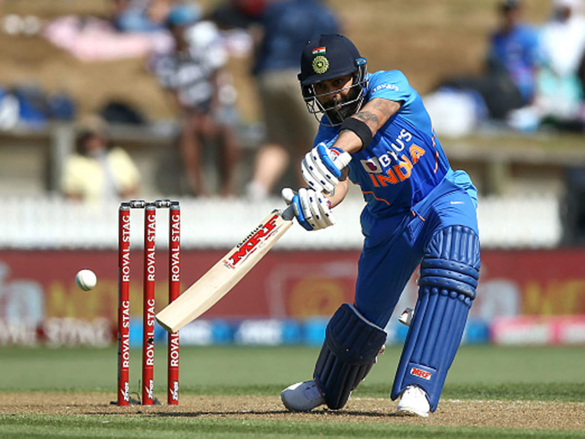
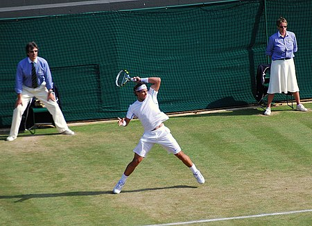

Cricket
Cricket
My Best Player is Sourav Ganguly in the previous generation.
Cricket is a bat-and-ball game played between two teams of eleven players each on a field at
the centre of which is a 22-yard (20-metre) pitch with a wicket at each end, each comprising two bails balanced on three stumps.
The game proceeds when a player on the fielding team, called the bowler, "bowls" (propels) the ball from one end of the pitch towards
the wicket at the other end, with an "over" being completed once they have legally done so six times.

My best player is Virat Kohli in this generation.
The batting side has one player at each end of the pitch, with the player at the opposite end of the pitch from the bowler aiming to strike the ball with a bat. The batting side scores runs either when the ball reaches the boundary of the field, or when the two batters swap ends of the pitch, which results in one run. The fielding side's aim is to prevent run-scoring and dismiss each batter (so they are "out", and are said to have "lost their wicket"). Means of dismissal include being bowled, when the bowled ball hits the stumps and dislodges the bails, and by the fielding side either catching a hit ball before it touches the ground, or hitting a wicket with the ball before a batter can cross the crease line in front of the wicket to complete a run. When ten batters have been dismissed, the innings ends and the teams swap roles. The game is adjudicated by two umpires, aided by a third umpire and match referee in international matches.Football
Football
My Favourite player is Lio Messi
Football is a family of team sports that involve, to varying degrees, kicking a ball to score a goal. Unqualified, the word football normally means the form of football that is the most popular where the word is used. Sports commonly called football include association football (known as soccer in North America and Oceania); gridiron football (specifically American football or Canadian football); Australian rules football; rugby union and rugby league; and Gaelic football.[1] These various forms of football share to varying extent common origins and are known as football codes. There are a number of references to traditional, ancient, or prehistoric ball games played in many different parts of the world.[2][3][4] Contemporary codes of football can be traced back to the codification of these games at English public schools during the 19th century.[5][6] The expansion and cultural influence of the British Empire allowed these rules of football to spread to areas of British influence outside the directly controlled Empire. [7] By the end of the 19th century, distinct regional codes were already developing: Gaelic football, for example, deliberately incorporated the rules of local traditional football games in order to maintain their heritage.[8] In 1888, The Football League was founded in England, becoming the first of many professional football associations. During the 20th century, several of the various kinds of football grew to become some of the most popular team sports in the world.[9]
Badminton
Badminton
My best player is PV Sindhu.
Badminton is a racquet sport played using racquets to hit a shuttlecock across a net. Although it may be played with larger teams, the most common forms of the game are "singles" (with one player per side) and "doubles" (with two players per side). Badminton is often played as a casual outdoor activity in a yard or on a beach; formal games are played on a rectangular indoor court. Points are scored by striking the shuttlecock with the racquet and landing it within the opposing side's half of the court.Each side may only strike the shuttlecock once before it passes over the net. Play ends once the shuttlecock has struck the floor or if a fault has been called by the umpire, service judge, or (in their absence) the opposing side.[1] The shuttlecock is a feathered or (in informal matches) plastic projectile which flies differently from the balls used in many other sports. In particular, the feathers create much higher drag, causing the shuttlecock to decelerate more rapidly. Shuttlecocks also have a high top speed compared to the balls in other racquet sports. The flight of the shuttlecock gives the sport its distinctive nature. The game developed in British India from the earlier game of battledore and shuttlecock. European play came to be dominated by Denmark but the game has become very popular in Asia, with recent competitions dominated by China. Since 1992, badminton has been a Summer Olympic sport with four events: men's singles, women's singles, men's doubles, and women's doubles,[2] with mixed doubles added four years later. At high levels of play, the sport demands excellent fitness: players require aerobic stamina, agility, strength, speed, and precision. It is also a technical sport, requiring good motor coordination and the development of sophisticated racquet movements.
Tennis
Tennis
My best player is Rafal Nadal.
Tennis is a racket sport that can be played individually against a single opponent (singles) or between two teams of two players each (doubles). Each player uses a tennis racket that is strung with cord to strike a hollow rubber ball covered with felt over or around a net and into the opponent's court. The object of the game is to manoeuvre the ball in such a way that the opponent is not able to play a valid return. The player who is unable to return the ball validly will not gain a point, while the opposite player will.[1][2] Tennis is an Olympic sport and is played at all levels of society and at all ages. The sport can be played by anyone who can hold a racket, including wheelchair users. The modern game of tennis originated in Birmingham, England, in the late 19th century as lawn tennis.[3] It had close connections both to various field (lawn) games such as croquet and bowls as well as to the older racket sport today called real tennis.[4] The rules of modern tennis have changed little since the 1890s. Two exceptions are that until 1961 the server had to keep one foot on the ground at all times,[5][6] and the adoption of the tiebreak in the 1970s.[7] A recent addition to professional tennis has been the adoption of electronic review technology coupled with a point-challenge system, which allows a player to contest the line call of a point, a system known as Hawk-Eye.[8][9] Tennis is played by millions of recreational players and is also a popular worldwide spectator sport.[10] The four Grand Slam tournaments (also referred to as the Majors) are especially popular: the Australian Open played on hard courts, the French Open played on red clay courts, Wimbledon played on grass courts, and the US Open also played on hard courts.
Indian Cricket
The Indian Cricket Association
The Board of Control for Cricket in India (BCCI) is the governing body for cricket in India and is under the jurisdiction of Ministry of Youth Affairs and Sports, Government of India.[4][failed verification] It is an autonomous organisation and does not come under National sports federation of India.[5] The board was formed in December 1928 as a society, registered under the Tamil Nadu Societies Registration Act. BCCI is an autonomous body and does not review any grants or fundings from Sports ministry of India.[6] It is a consortium of state cricket associations, and the state associations select their representatives who in turn elect the BCCI Chief. Its headquarters is located at Wankhede Stadium in Mumbai, Maharashtra. Grant Govan was its first president and Anthony De Mello was first secretary.[7] BCCI have three International Cricket teams which represent India in international cricket, that is India men's national cricket team and India women's national cricket team and India n
Tata Ipl 2022
The 2022 Indian Premier League, also known as IPL 15 or, for sponsorship reasons, Tata IPL 2022,[2] is the fifteenth season of the Indian Premier League (IPL), a professional Twenty20 cricket league established by the Board of Control for Cricket in India (BCCI) in 2007. The tournament is being played from 26 March 2022, and to be concluded with the final on 29 May 2022. The group stage of the tournament is being played entirely in the state of Maharashtra, with Mumbai and Pune hosting the matches.[3] The full schedule of the tournament was announced on 6 March 2022.[4] The season saw the expansion of the league, with the addition of two new franchises.[5][6] Therefore, this was the second season to have ten teams, after the 2011 tournament.[7] Chennai Super Kings are the defending champions, having won their fourth title during the previous season.[8]
Indian Football

Indian Football
The India national football team represents India in international football and is controlled by the All India Football Federation (AIFF). The squad is under the global jurisdiction of FIFA and governed in Asia by the AFC. The AIFF is one of the founding members of the South Asian Football Federation (SAFF) and the squad is also a part of the regional federation. The team, which was once considered one of the best teams in Asia, had its golden era during the 1950s and early 1960s. During this period, India won gold at the 1951 and 1962 Asian Games, while finishing fourth at the 1956 Summer Olympics. Thus, India became the first Asian nation to reach the semi-final of a FIFA organised major tournament. India has never participated in the FIFA World Cup, although they did qualify by default for the 1950 World Cup after all other nations in their qualification group withdrew. However, India withdrew prior to the beginning of the tournament. The team has also appeared four times in the AFC Asian Cup, Asia's top football championship and finished as runners-up in 1964. India also participates in the SAFF Championship, the top regional football competition in South Asia. They have won the tournament eight times since it began in 1993 and by doing so became the most successful team in the region.
ISL
The Indian Super League (ISL) is the men's professional top tier football league in Indian football system. It is organised by All India Football Federation (AIFF) and their commercial partners Football Sports Development Limited (FSDL).[1][2] [3] [4] For sponsorship ties with Hero MotoCorp, it is officially called as Hero Indian Super League. The league currently comprises 11 clubs. Each season of the tournament generally runs from November to March. During the league stage of the competition, each club plays against all the other clubs in a round-robin style. At the end of the league stage, the team with the most points gets declared the Premiers and presented with a trophy named League Winners Shield, and the top four clubs qualify for the play-offs. The season then culminates with the ISL Final to determine the Champions who are presented with the ISL Trophy. The competition was founded on 21 October 2013 with the aim of growing the sport of football in India and increasing its exposure in the country. The league began in October 2014 with eight teams. During its first three seasons, the competition operated without official recognition from the Asian Football Confederation (AFC), the governing body for the sport in Asia. The competition was also structured along the same lines as the Indian Premier League, the country's premier Twenty20 franchise-based cricket competition. Each season lasted just 3 months, from October to December, and matches were held daily. However, before the 2017–18 season, the league expanded to ten teams, expanded its schedule to six months, and earned recognition from the AFC.